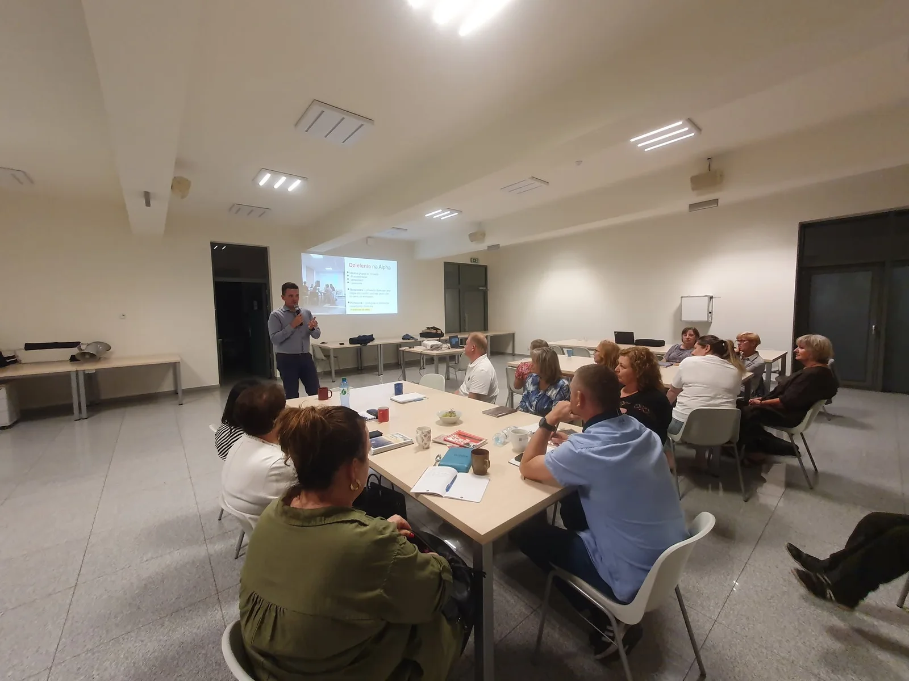
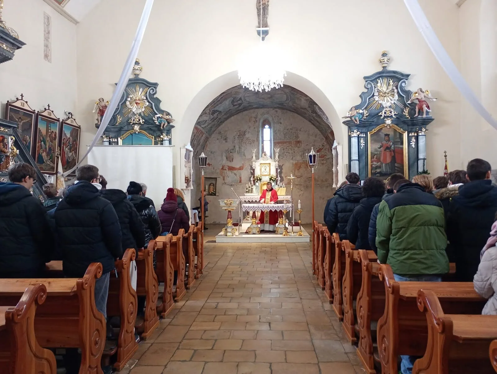
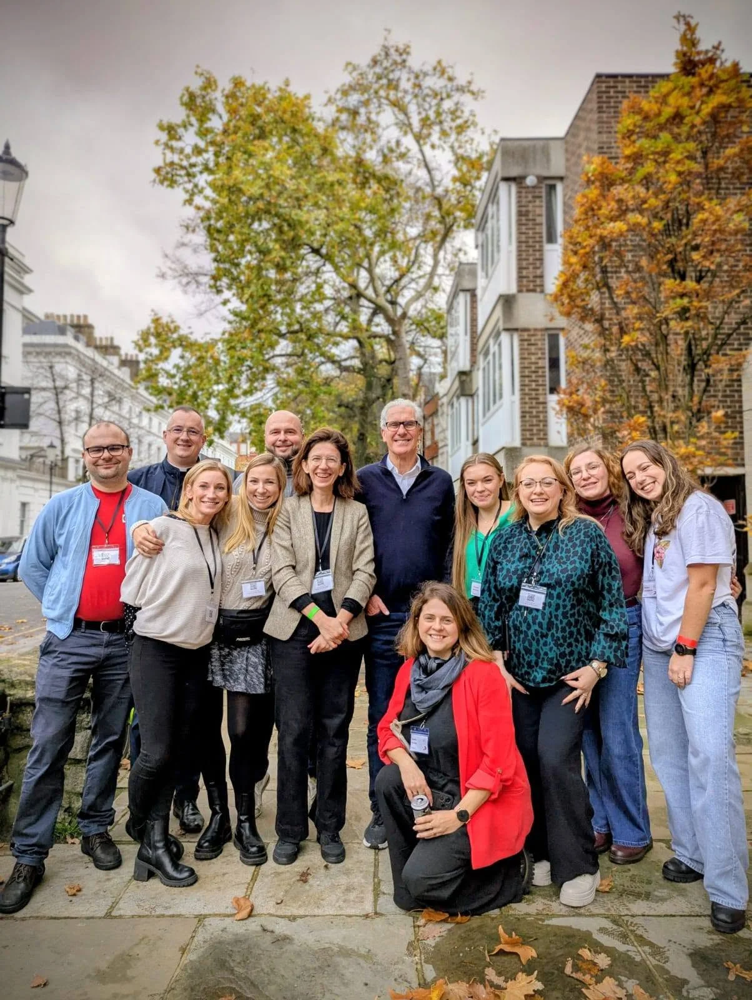

Sławomir
Koordynator RCA Lubecko, szkolenia i wsparcie nowych zespołów
O nas
Regionalne Centrum Alpha w Lubecku działa w ramach SNE Lubecko. Promujemy Alpha, szkolimy zespoły i wspieramy pierwsze edycje w nowych miejscach.
Nasz zespół
Łączy nas doświadczenie kolejnych edycji Alpha i pragnienie, żeby parafie otrzymały proste narzędzie docierania do osób poszukujących.
Koordynator RCA Lubecko, szkolenia i wsparcie nowych zespołów

Alpha, szkolenia i rozwój działań regionalnych

Alpha i Alpha dla młodzieży

Zespół Regionalnego Centrum Alpha w Lubecku

Zespół RCA i współpraca w środowisku Alpha

Co robimy?
SNE Lubecko
RCA działa przy Szkole Nowej Ewangelizacji w Lubecku i w środowisku Sanktuarium Matki Bożej Lubeckiej. Lokalna wspólnota jest miejscem własnych edycji, szkoleń i spotkań dla zespołów z innych parafii.
To doświadczenie pozwala nam mówić o Alpha praktycznie: z perspektywy stołu, zaproszeń, ekipy i kolejnych edycji.


Współpraca
Uczestniczymy w spotkaniach Regionalnych Centrów Alpha, wydarzeniach Alpha Polska i międzynarodowej wymianie doświadczeń. Współpracujemy także z innymi RCA, parafiami i wspólnotami ewangelizacyjnymi.
Najważniejsze pozostaje jednak konkretne miejsce i konkretni ludzie, którzy pytają: jak zacząć u nas?
Poznajmy się